BeatConfused Studio
eTuttino manuals
The eTuttino is an electronic chromatic button accordion: 44 keys in C-griff (G3 to E6), with its own sound and a headphone output. The keys are magnetic, so every note follows how hard you play it (velocity). These manuals take you from zero, ordering the boards, to playing.

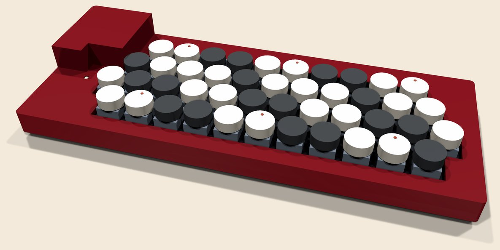
Start here
Before you start
Listen before you build
Open beatconfused.com/etutti, switch on Listen in this browser and play with the mouse or the computer keyboard. The accordions and the synth are the same synthesis as on the Teensy. Piano, bass and guitar are only approximations in the browser: the Teensy plays recorded samples.
How the eTuttino works
Each key is a Gateron magnetic switch (KS-20) with a small magnet in its stem. Under every switch, on the back of the board, a DRV5056A3 Hall sensor measures the magnet's field: the further the key goes down, the higher its voltage. Three CD74HC4067 multiplexers bring the 44 sensors to three analog inputs of a Teensy 4.0.
The Teensy reads every key thousands of times a second and works out the velocity from how long the key takes to go down. The sound comes from the Audio Board Rev D under the Teensy. The eTuttino plays on its own (it only needs USB power) and also talks to the web page over USB MIDI.
Size and layout
The board is 267 × 97.2 mm: the four key rows plus a 15 mm strip at the back; the case adds 5.5 mm all round (278 × 108 mm). Rows 3 and 4 start after row 2, which leaves the back left corner free for the Teensy and the Audio Board, with the USB and the headphone output facing the left edge. That's for the player: the cables leave on the left, away from the right hand that plays, the right end is clear for the high notes, and the power LED sits just in front of the Teensy, in sight.
The Audio Board is soldered low on the board, so the stack ends about 20 mm above it (the top of the keys is at about 19 mm). In the case it sits under a small pod in that corner, clear of the keys.

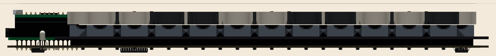
Two ways to build it
- Route A: board soldered by the factory. You order the board from JLCPCB with their assembly service (PCBA). It arrives with every small part already soldered on the back. At home you only solder the Teensy and the Audio Board. It's the easiest and most reliable route.
- Route B: everything soldered at home. The board arrives bare and you solder 99 SMD parts (44 sensors, 49 capacitors, 2 resistors, three 24-pin chips, one regulator). It's cheaper, but needs a fine-tip iron, flux, tweezers and patience.
What comes soldered and what you assemble
| Part | Qty | Route A | Route B |
|---|---|---|---|
| Hall sensor DRV5056A3QDBZR (SOT-23) | 44 | soldered | you solder |
| Capacitor 100 nF 0805 | 47 | soldered | you solder |
| Multiplexer CD74HC4067M96 (SOIC-24) | 3 | soldered | you solder |
| Regulator AMS1117-3.3 (SOT-223) | 1 | soldered | you solder |
| Capacitors 10 µF and 22 µF 0805 | 1 + 1 | soldered | you solder |
| Resistor 330 Ω 0805 (for the LED) | 2 | soldered | you solder |
| Power LED, 3 mm, red/green, common cathode (3 legs) | 1 | you solder | you solder |
| Audio Board Rev D + 2 × 1×14 stacking headers | 1 + 2 | you solder | you solder |
| Teensy 4.0 + 2 × 1×14 male headers | 1 + 2 | you solder¹ | you solder¹ |
| Gateron KS-20 magnetic switch | 44 | snap in | snap in |
| Round MX keycap: 26 light + 18 dark | 44 | press on | press on |
| Switch plate, FR4 | 1 | no solder | no solder |
| M2 × 3.5 mm standoffs + M2 × 4 mm screws | 9 + 18 | screw | screw |
| 3D-printed case (tray + top), M2 × 10 mm self-tapping screws, 10 mm rubber feet | 2 + 10 + 4 | screw | screw |
¹ PJRC sells a "Teensy 4.0 with pins", with the pins already soldered.
Magnetic switches have no electrical contacts, so they aren't soldered. The plate holds them, and their two plastic pegs drop into holes in the board.
Shopping list (both routes)
- Teensy 4.0: pjrc.com or a distributor.
- Audio Adaptor Board Rev D (or D2) for Teensy 4.x: pjrc.com.
- 2 × 1×14 male headers (if your Teensy comes without pins).
- 2 × 1×14 stacking headers with long legs (female socket on top, legs below): they sit on the Audio Board, take the Teensy on top and go into the eTuttino board below.
- 44 Gateron KS-20 magnetic switches (two 35-packs, or a 35-pack plus a 10-pack). They must be magnetic (Hall-effect) switches with the north pole down, which is Gateron's standard. Ordinary mechanical switches won't work.
- 44 round keycaps with an MX stem ("round" or "typewriter"): 26 light ones for the naturals and 18 dark ones for the sharps.
- 9 M2 × 3.5 mm standoffs (female-female) and 18 M2 × 4 mm screws.
- For the case: 10 M2 × 10 mm self-tapping screws (pan head, for plastic) and 4 stick-on rubber feet, 10 mm across.
- A 3 mm bicolour LED, red/green, common cathode (3 legs, the cathode in the middle), for the power light.
- A 3 mm piece of cardboard or plastic, as a spacer while soldering the Audio Board.
- A micro-USB cable (the Teensy 4.0 is micro-USB) and headphones or a speaker with a 3.5 mm plug.
- The case: two 3D-printed parts, ordered from a printing service (see The case).
Rough cost
Rough figures in US dollars, as of October 2026, before shipping and taxes. The sites show the exact price, shipping and taxes before you pay.
| Item | Route A | Route B |
|---|---|---|
| Boards from JLCPCB (5 boards + 5 plates) | ≈ US$ 25–55 | ≈ US$ 25–55 |
| SMD assembly (PCBA), 2 boards, parts included | ≈ US$ 80–140 | — |
| SMD parts from LCSC (1 board, with spares) | — | ≈ US$ 35–55 |
| Teensy 4.0 + Audio Board Rev D | ≈ US$ 40 | ≈ US$ 40 |
| Gateron KS-20 switches (44) | ≈ US$ 30–50 | ≈ US$ 30–50 |
| Keycaps, headers, standoffs | ≈ US$ 20–40 | ≈ US$ 20–40 |
| 3D-printed case (resin or nylon, 2 parts) + screws and feet | ≈ US$ 30–80 | ≈ US$ 30–80 |
Downloads
- etuttino_gerbers.zip: the board (Gerbers + drill files)
- etuttino_plate_gerbers.zip: the switch plate
- etuttino_bom.csv: parts list (BOM) for JLCPCB assembly
- etuttino_cpl_bottom.csv: where each part goes (CPL)
- etuttino_case_top.stl and etuttino_case_bottom.stl: the case, for 3D printing (top and tray as STEP, to change in CAD)
- Firmware and board design (KiCad) on GitHub

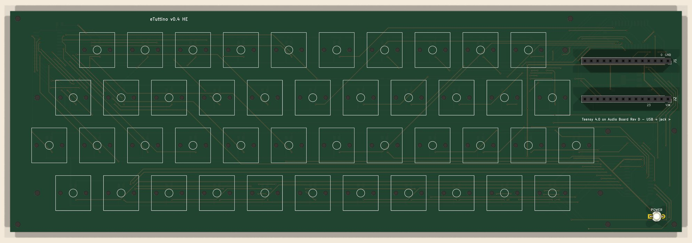

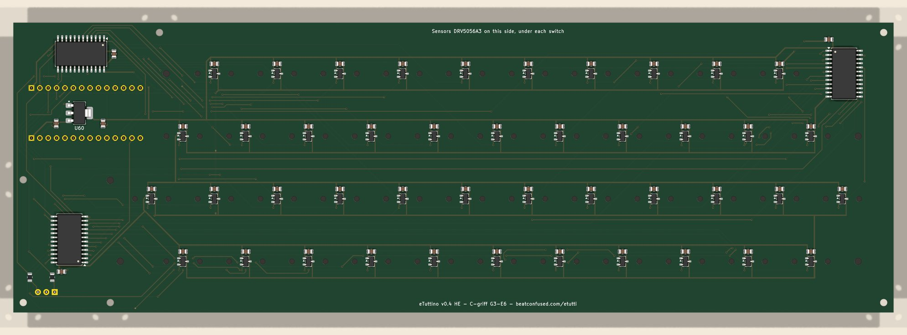
Assembly · route A
Board soldered by the factory (JLCPCB)
JLCPCB makes the board and solders every SMD part on the back. The steps below follow JLCPCB's site as it was when this was written. Button names may change a little, but the choices are the same. PCBWay and other fabs work the same way.
1. Order the board with assembly
- Download etuttino_gerbers.zip, etuttino_bom.csv and etuttino_cpl_bottom.csv.
- On jlcpcb.com, create an account, click Order now and upload
etuttino_gerbers.zip. The site reads the size (267 × 97.2 mm) and shows a preview. -
Board settings:
- Layers: 2 · Base material: FR-4 · PCB Qty: 5 (the minimum)
- PCB Thickness: 1.2 mm. This matters: a thinner board puts the sensor closer to the magnet. 1.6 mm still works, with a weaker signal.
- Surface finish: HASL (lead free) or ENIG · any colour · leave the rest at the defaults
-
Turn on PCB Assembly:
- PCBA Type: Economic
- Assembly Side: Bottom Side (every part is on the back)
- PCBA Qty: 2 (the minimum), or as many as you want built
- Tooling holes: "Added by JLCPCB"
- Click Next and upload the BOM (
etuttino_bom.csv) and the CPL (etuttino_cpl_bottom.csv). -
On the parts screen, check every line:
- the capacitors and the regulator already carry their LCSC numbers (C49678, C15850, C45783, C6186);
- for
DRV5056A3QDBZRandCD74HC4067M96, search by name and pick exactly that part.
DRV5056A4QDBZRalso works (it's less sensitive). Don't use DRV5055 or DRV5057. -
Check the placement preview carefully. Fabs sometimes get the rotation of a package wrong.
Compare with the close-ups in route B:
- multiplexers: each chip's pin-1 dot must sit at the corner marked on the silkscreen;
- regulator: its wide tab sits on the wide pad;
- sensors: the side with 2 pins sits on the 2 pads and the single pin on the single pad.
- Confirm and add to cart.
2. Order the switch plate
- Place a second order with etuttino_plate_gerbers.zip: FR-4, 1.6 mm, no assembly. The plate has a notch in the back left corner for the Teensy, and no copper. Black or white looks good under the keys.
- For aluminium,
hardware/build/etuttino_plate.dxfis ready for 1.5 mm laser cutting.
3. When the board arrives
- Look over the back with a magnifier and compare it with the picture above: no crooked chips and no solder joining neighbouring pins, especially on the multiplexers.
- With a multimeter on continuity, check there is no short between regulator U60's big tab (3.3 V) and a Teensy GND hole (marked "GND" on the silkscreen). Check the same between the VIN hole and GND.
- Carry on with the Final assembly.
Assembly · route B
Everything soldered at home
The board arrives bare and you solder the 99 SMD parts on the back. They're small, but none is hard: the tightest pin spacing is 0.95 mm (sensors) and 1.27 mm (multiplexers).
Tools
- A temperature-controlled iron with a fine tip (thin conical, or a 1–2 mm chisel), at about 330 °C
- Thin solder (0.5 mm) and flux (gel or pen): without flux, SMD is misery
- Fine tweezers, desoldering braid, a magnifier (or your phone's zoom)
- A multimeter, plus isopropyl alcohol and a brush to clean off the flux
- Optional: a JLCPCB stencil, solder paste and a hot plate or hot-air station
1. Order the board and the parts
- On JLCPCB, upload etuttino_gerbers.zip with the same settings as route A (2 layers, 1.2 mm, 5 boards), but without PCB Assembly.
- If you'll use solder paste, add a stencil for the bottom side only.
- Order the plate too, as in step 2 of route A.
-
Buy the parts (from LCSC, which can ship with JLCPCB, or from Mouser, DigiKey or a local shop). Get spares:
Part Code Used Buy Hall sensor DRV5056A3QDBZR44 48–50 Capacitor 100 nF 0805 LCSC C49678 47 60 Multiplexer CD74HC4067M963 4 3.3 V regulator AMS1117-3.3(LCSC C6186)1 2 Capacitor 10 µF 0805 LCSC C15850 1 2 Capacitor 22 µF 0805 LCSC C45783 1 2 Resistor 330 Ω 0805 LCSC C17630 2 5
2. Soldering order (all on the back)
Lay the board back side up (the side with the "Sensors DRV5056A3…" text). Go from the hardest part to the easiest:
-
Multiplexers U51, U52 and U53 (SOIC-24): U51 in the front left corner, before the start of rows 1 and 2; U52 lying sideways along the back edge, just right of the Teensy's holes; U53 in the back right corner, past the end of rows 3 and 4. Find the
pin-1 dot on the chip and the pin-1 mark on the silkscreen, and line them up.
- Tin one corner pad.
- Hold the chip with tweezers, reheat that pad and line up all 24 pins.
- Solder the opposite corner.
- Add flux and solder the rest, one by one or by dragging the tip.
- Bridges come off with flux and braid.
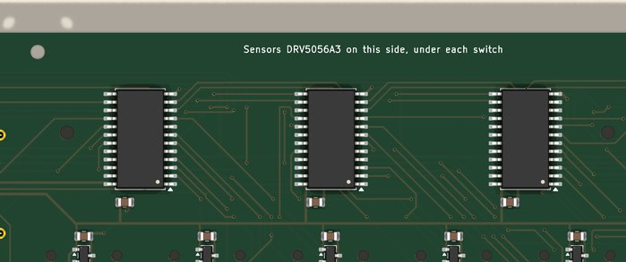
U51 with its capacitor C71, and the LED resistors R1/R2. Check the chip's pin 1. U52 is in the regulator close-up below, U53 in the back-right close-up. 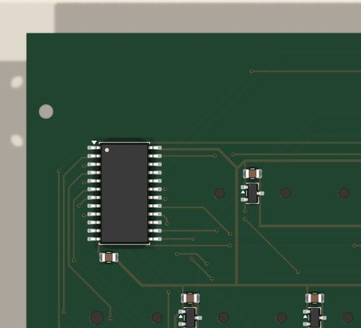
U53 with its capacitor C73, in the back right corner. Check the chip's pin 1. - Regulator U60 (SOT-223), in the back left corner, between the two rows of Teensy holes. It only fits one way: the wide tab on the wide pad. Solder one small pin, align, then the others and finally the tab (it needs more heat).
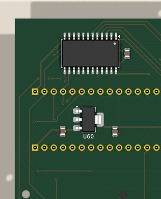
Regulator U60 between the Teensy holes, C81 (22 µF) on one side and C80 (10 µF) on the other; multiplexer U52 with C72 above. Seen from the back. - Capacitors C80 (10 µF) and C81 (22 µF), one on each side of the regulator. Check the silkscreen: they look the same but have different values.
-
Sensors U1–U44 (SOT-23), in the middle of each key position. The 2-pin side goes on the 2
pads, so it can't go in backwards. The printed face points out, visible on the back: that's how any SMD part
sits.
Check the chip's marking: it must be a DRV5056 (A3 or A4). DRV5055, DRV5053 and DRV5057 look the same but won't work here.
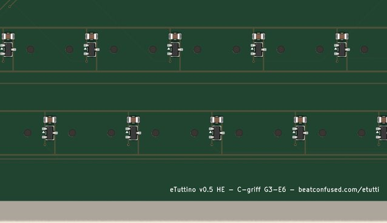
Each key: the sensor in the middle, its 100 nF capacitor just above, the 3.3 V trace above that and the GND trace below. - 100 nF capacitors: C1–C44, one just above each sensor, and C71–C73, one next to each multiplexer.
- LED resistors R1 and R2 (330 Ω), in the front left corner, just behind the LED's holes.
- Clean the flux off with isopropyl alcohol and check everything with a magnifier: lifted pins, bridges and missing parts.


With paste and a stencil: apply the paste through the stencil on the back, place every part with tweezers and reflow on the hot plate. The other side is still empty, so the board lies flat without trouble. Then inspect with a magnifier.
3. Electrical check before going on
- With a multimeter on continuity, check there is no short between regulator U60's tab (3.3 V) and a Teensy GND hole (marked "GND" on the silkscreen), nor between the VIN hole and GND.
- Carry on with the Final assembly. The page's key test shows, sensor by sensor, whether each joint is good.
Assembly · both routes
Final assembly and test
1. Teensy + Audio Board, in the back left corner
To keep the eTuttino thin, the Audio Board is soldered low on the board, about 3 mm above it, on the legs of the stacking headers. The Teensy plugs in on top and stays removable. Those 28 legs are the only link between the stack and the keyboard: no screws, no other wires. Every Teensy pin has its leg and its hole.

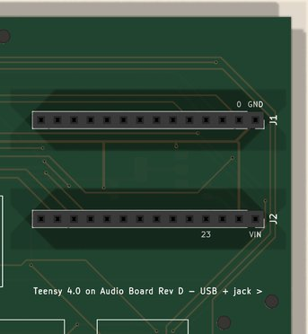
- On the Audio Board Rev D, fit the two stacking headers from the top: the female socket sits on top of the Audio Board and the long legs go down through it. Solder the legs underneath the Audio Board.
- Put the legs into the eTuttino board's holes from the front. The Audio Board's headphone jack faces the left edge, as the "< USB + jack" silkscreen shows, and its "GND/0" row is the front one, towards the keys. The holes marked "GND"/"0" and "VIN"/"23" help you check the direction.
- Put the 3 mm spacer between the Audio Board and the board, hold them together and solder the legs from the back. Trim the legs flush with the joints: the back has to stay flat.
- Solder the male headers to the Teensy 4.0, pointing down (or use a "Teensy 4.0 with pins"), and plug the Teensy into the Audio Board's sockets: pin 0 to pin 0, USB towards the left edge.

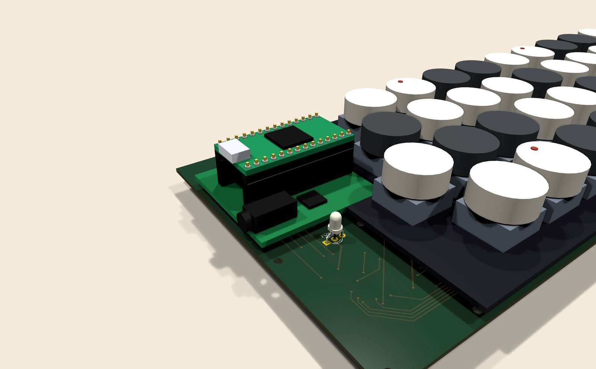

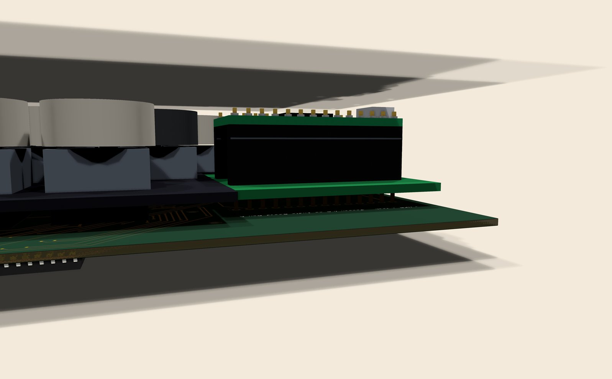
Rather keep the Audio Board removable? Solder two 1×14 female sockets to the board and plug the Audio Board's legs into them. It works the same, but the stack ends up about 6 mm taller than the keys.
The power LED
- The LED goes on the front, in the front left corner, in the three holes marked "POWER", outside the plate. The middle leg is the common cathode; the red leg goes in the square hole. Check your LED's datasheet: the long-leg rule doesn't apply to three-leg LEDs.
- Leave the legs long enough for the LED's dome to sit about 6 mm above the board, in the window of the case's top; solder from the back and trim.
2. Flash the firmware
- Install the Arduino IDE and Teensyduino.
- Download the etutti_synth folder and open
etutti_synth.ino. Keep the other files in the same folder. - Under Tools › Board pick Teensy 4.0; under Tools › USB Type pick MIDI.
- Plug in the USB and click Upload. If you see "In the Arduino IDE choose Tools › USB Type › MIDI", the USB Type is still on "Serial".
3. Test the sensors before fitting the switches
- Plug headphones or a speaker into the Audio Board, and the USB into the computer.
- Open beatconfused.com/etutti in Chrome or Edge, click Connect and allow MIDI.
- In the eTuttino keys panel, turn on Key test.
- Bring a small magnet (a fridge magnet will do) over each key position, from the top. The ring around that key on screen should fill up. If nothing happens, turn the magnet over: only one pole is read.
If one sensor doesn't respond, redo its solder joints. If a whole block of neighbouring keys doesn't respond, the problem is that block's multiplexer: U51 for row 1 and the left end of row 2, U52 for the left half of the other keys, U53 for their right half. Check its joints and its pin 1. If nothing responds, measure 3.3 V between U60's tab and GND, and check the Teensy and the Audio Board are the right way round.
4. Switches, plate and keycaps
- Snap the 44 Gateron switches into the plate from the top until they click. Either way round is fine.
- Screw the 9 M2 × 3.5 mm standoffs to the plate, in its holes.
- Lower the board onto the assembly: each switch's two plastic pegs drop into the board's holes, and the Teensy sits in the plate's notch. Screw it on from below.
- The board has to sit right against the bottom of the switches, with no gap: the distance from magnet to sensor is part of the measurement.
- Fit the keycaps: light ones on the naturals, dark ones on the sharps. Check against the page, which shows every key's note name.

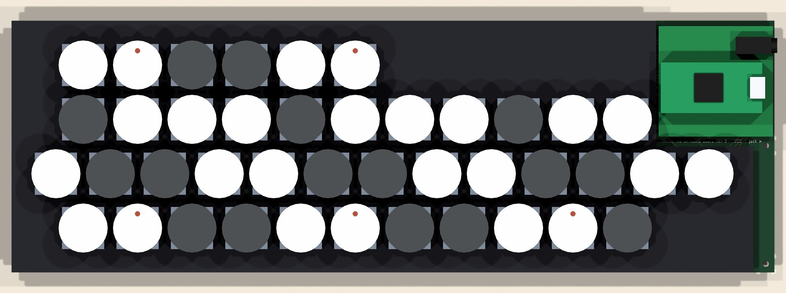
5. The case
The case is two 3D-printed parts: a tray under the board and a top that frames the keys. The top has one stepped opening that follows the four staggered rows, a window for the power LED and, in the back left corner, a pod over the Teensy with the USB and headphone openings in its left side. Nothing in the case touches the Teensy or the Audio Board.

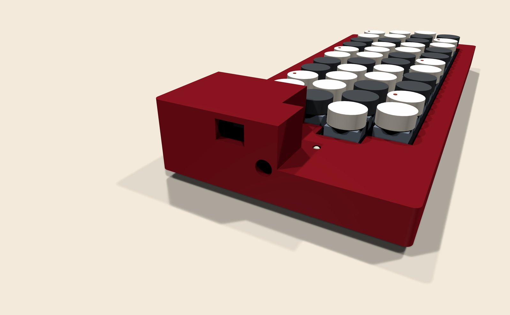
Why the tray has pillars. The switches stand on the board, so pressing a key pushes the 1.2 mm board down under it. Held only at its mounting holes, which are all near the edges, the middle of the board would give about 2.62 mm under a firm press (3 N), enough to feel and to upset the sensor reading. The tray has a boss under every hole and 43 small pillars that touch the back of the board where it carries only traces (no parts, no pads, no vias), along the gaps between the rows. On them the worst key gives about 0.027 mm. (Estimated with a simple model of the bare board, ignoring the plate, so the real figures are lower.)

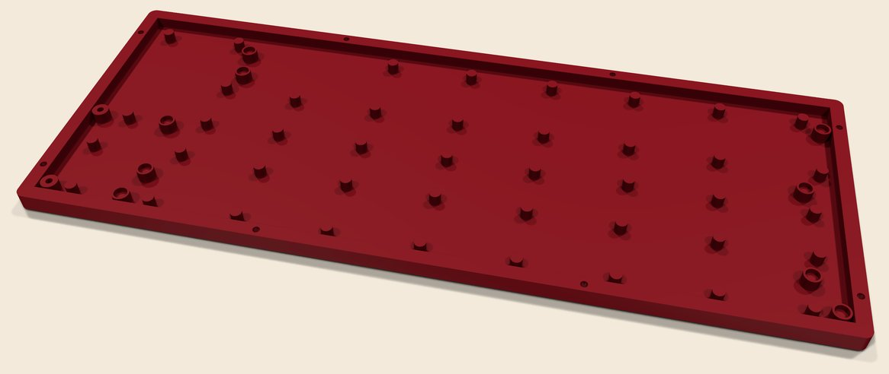
Ordering the case
Upload etuttino_case_top.stl and etuttino_case_bottom.stl (millimetres) to a printing service. Each part is 278 × 108 mm, too long for most home printers (it needs a 300 mm bed).
- JLC3DP (JLCPCB's printing service): it can ship with the boards. SLA resin is the cheapest smooth finish; MJF nylon (PA12) is the toughest.
- PCBWay: the same choices, if you order the boards there.
- Craftcloud: compares prices from many printers, including local ones.
- A local service with a large FDM printer: PETG at 0.2 mm layers and 4 walls is strong enough.
Print the top upside down (deck on the bed) and the tray the right way up; neither needs supports except the openings in the pod's side.
Putting it together
- Stick the four rubber feet into the round recesses under the tray.
- Lay the board, with plate, switches and Teensy, into the tray: the screw heads under the board drop into the pockets of the bosses.
- Put the top on, with the USB and headphone openings over the Teensy's end.
- From below, drive the eight M2 × 10 mm screws through the tray's walls into the top, and the two in the left holes (they go through the board into the posts under the top). Don't overtighten: it's plastic.
- Fit the keycaps if they're not on yet.

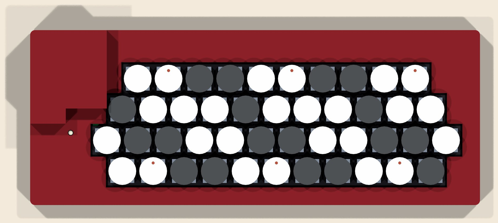
6. Calibrate and check
- Unplug and replug the USB: at start-up the Teensy measures every key at rest. Don't touch the keys while it starts.
- On the page, click Calibrate keys and press every key all the way down once. The Teensy stores each key's travel in its internal memory (EEPROM).
- With Key test on, each ring should go from empty (released) to full (bottomed out). Done: on to the User manual.
The magnet test in step 3 leaves a wrong calibration stored. That's why the calibration in step 6 is a must once the switches are in.
User manual
Playing the eTuttino
Power and sound
- Power: the Teensy's USB cable into a computer or a phone charger. On a charger the eTuttino plays on its own, without the page.
- Sound: headphones or a speaker on the Audio Board's output, on the left side, next to the USB. It starts on the classic accordion.
- Don't touch the keys for the first couple of seconds: that's when the Teensy measures every key's rest position.
- Power LED: orange while it reads all the keys at power-up, then green while playing. Blinking red means an error: the Audio Board didn't answer, or a key's sensor didn't (find it with Key test on the page).
The keyboard
- There are 4 rows. Row 1 is the one nearest you: A3 to D♯6. Row 2 runs G3 to E6 and row 3 G♯3 to D6. Row 4 repeats row 1's notes from A3 to C6, on row 2's columns: its A3 sits above row 2's A♯3.
- In C-griff, each key along a row is a minor third (3 semitones) above the previous one. Diagonally, from one row to the next, the step is 1 semitone.
- The page switches to B-griff, C-griff's mirror image, and the real keys follow.
With the beatconfused.com/etutti page
- Open the page in Chrome or Edge (Safari has no Web MIDI), click Connect and allow MIDI. The device shows up as "eTutti" (or "Teensy MIDI").
- On connecting, the page sends all its settings to the Teensy. They aren't stored there: after a power cycle it's back to the classic accordion until the page connects again.
- Instrument: classic accordion, jazz accordion, piano, bass, guitar (nylon) or synth. "Reset to default" goes back to the classic accordion.
- Accordion register: the round switch turns each reed set on and off (16', 8' open, 8' in cassotto, 4'). The named buttons (Master, Violin, Clarinet…) pick ready-made combinations.
- Envelope, volume, tone and ambience: shape the sound live.
- Computer keyboard: plays from the Z…/, A…], W…[ and 3…= rows (on an ABNT2 keyboard; the page shows your own keyboard's labels). The page's octave and velocity only apply to these notes and the on-screen ones.
- Listen in this browser: plays the sounds through the computer's speakers, with or without a Teensy. It stays off until you switch it on.
Velocity (how hard you play)
The eTuttino times how long each key takes to go down: fast sounds loud, slow sounds soft. Piano, guitar, bass and synth respond to velocity, and so does the accordion, through each note's volume. In the eTuttino keys panel:
- Fixed: every note at the same level (100), like an ordinary keyboard.
- Light touch: loud notes with little effort.
- Normal: the default.
- Firm touch: you have to play faster to sound loud.
Calibration
- The Teensy learns the bottom of each key on its own (the deepest press it has seen) and keeps it even when unplugged. The rest position is measured every time it starts.
- Click Calibrate keys and press every key all the way down once when you swap a switch, take the board apart, or a key triggers too early or too late.
- Key test shows, with a ring around each on-screen key, how far the real key is pressed.
As a MIDI controller
The eTuttino is a standard USB MIDI device. In a music program (DAW) it shows up as a MIDI input and sends its notes on channel 1, with velocity. It also plays any notes it receives, on any channel, with its own sound.
Troubleshooting
| What happens | What to do |
|---|---|
| The page can't find the eTutti | Use Chrome or Edge and allow MIDI. Check the firmware was flashed with USB Type = MIDI. |
| A key doesn't play | Turn on Key test. If its ring doesn't move, check that key's sensor joints (or ask for help at the address below). |
| A key triggers on its own, or too early or late | Click Calibrate keys and press every key to the bottom. Check the board sits right against the switches. |
| Every note sounds the same, no dynamics | Key velocity is on "Fixed". Pick Normal. |
| No sound | Check the headphones on the Audio Board's output and the volume on the page. Click "All notes off" (Esc). |
| Every note sounds twice | "Listen in this browser" is on with the Teensy connected: switch one of them off. |
| A note is stuck | Esc, or "All notes off" on the page. |
| The LED blinks red | Turn on Key test: a key whose ring never moves has a sensor problem. If every key works, check the Audio Board is seated (its codec didn't answer). |
| The LED stays off | No USB power, or the LED is in the wrong way round (the middle leg is the cathode). |
Questions and ideas: beatconfused@beatconfused.com.
O eTuttino é um acordeão cromático de botões eletrônico: 44 teclas no sistema C-griff (Sol3 a Mi6), com som próprio e saída de fone. As teclas são magnéticas, então cada nota sai com a força com que você toca (velocity). Estes manuais levam você do zero, comprando as placas, até tocar.
Comece aqui
Antes de começar
Ouça antes de montar
Abra beatconfused.com/etutti, ligue Ouvir no navegador e toque com o mouse ou com o teclado do computador. Os acordeões e o synth são a mesma síntese do Teensy. Piano, baixo e violão, no navegador, são só aproximações: o Teensy toca amostras gravadas.
Como o eTuttino funciona
Cada tecla é uma chave magnética Gateron (KS-20), com um pequeno ímã dentro da haste. Embaixo de cada chave, no verso da placa, um sensor Hall DRV5056A3 mede o campo do ímã: quanto mais a tecla desce, maior a tensão. Três multiplexadores CD74HC4067 levam os 44 sensores a três entradas analógicas de um Teensy 4.0.
O Teensy lê cada tecla milhares de vezes por segundo e calcula a velocity pelo tempo que a tecla leva para descer. O som sai da Audio Board Rev D, montada embaixo do Teensy. O eTuttino toca sozinho (basta energia USB) e também conversa com a página por MIDI USB.
Tamanho e disposição
A placa tem 267 × 97,2 mm: as quatro fileiras de teclas e uma faixa de 15 mm atrás; a caixa acrescenta 5,5 mm em volta (278 × 108 mm). As fileiras 3 e 4 começam depois da 2 e deixam livre o canto de trás à esquerda, onde ficam o Teensy e a Audio Board, com o USB e a saída de fone virados para a borda esquerda. É pensado para quem toca: os cabos saem pela esquerda, longe da mão direita, a ponta direita fica livre para as notas agudas, e o LED de energia fica logo à frente do Teensy, à vista.
A Audio Board é soldada rente à placa, e o conjunto termina cerca de 20 mm acima dela (o topo das teclas fica a uns 19 mm). Na caixa ele fica sob uma pequena cúpula nesse canto, longe das teclas.
Duas maneiras de montar
- Opção A: placa já soldada pela fábrica. Você pede a placa na JLCPCB com o serviço de montagem (PCBA). Ela chega com todos os componentes pequenos já soldados no verso. Em casa você solda só o Teensy e a Audio Board. É o caminho mais fácil e confiável.
- Opção B: tudo soldado em casa. A placa chega vazia e você solda 99 componentes SMD (44 sensores, 49 capacitores, 2 resistores, 3 chips de 24 pinos, 1 regulador). Sai mais barato, mas pede ferro de ponta fina, fluxo, pinça e paciência.
O que vem soldado e o que você monta
| Peça | Qtd. | Opção A | Opção B |
|---|---|---|---|
| Sensor Hall DRV5056A3QDBZR (SOT-23) | 44 | vem soldado | você solda |
| Capacitor 100 nF 0805 | 47 | vem soldado | você solda |
| Multiplexador CD74HC4067M96 (SOIC-24) | 3 | vem soldado | você solda |
| Regulador AMS1117-3.3 (SOT-223) | 1 | vem soldado | você solda |
| Capacitores 10 µF e 22 µF 0805 | 1 + 1 | vem soldado | você solda |
| Resistor 330 Ω 0805 (do LED) | 2 | vem soldado | você solda |
| LED de energia 3 mm vermelho/verde, cátodo comum (3 pernas) | 1 | você solda | você solda |
| Audio Board Rev D + 2 "stacking headers" 1×14 | 1 + 2 | você solda | você solda |
| Teensy 4.0 + 2 barras de pinos macho 1×14 | 1 + 2 | você solda¹ | você solda¹ |
| Chave magnética Gateron KS-20 | 44 | só encaixa | só encaixa |
| Tecla (keycap) redonda MX: 26 claras + 18 escuras | 44 | só encaixa | só encaixa |
| Placa de suporte das chaves (plate), FR4 | 1 | sem solda | sem solda |
| Espaçador M2 × 3,5 mm + parafusos M2 × 4 mm | 9 + 18 | parafusar | parafusar |
¹ A PJRC vende o "Teensy 4.0 with pins", com os pinos já soldados.
As chaves magnéticas não têm contato elétrico: não são soldadas. Elas ficam presas na placa de suporte, e dois pinos de plástico se encaixam nos furos da placa.
Lista de compras (vale para as duas opções)
- Teensy 4.0: pjrc.com ou distribuidores.
- Audio Adaptor Board Rev D (ou D2) para Teensy 4.x: pjrc.com.
- 2 barras de pinos macho 1×14 (se o Teensy vier sem pinos).
- 2 "stacking headers" 1×14 com pernas longas (soquete fêmea em cima, pernas embaixo): ficam na Audio Board, recebem o Teensy em cima e entram na placa do eTuttino embaixo.
- 44 chaves Gateron KS-20 magnéticas (dois pacotes de 35, ou um de 35 e um avulso de 10). Tem que ser chave magnética (Hall effect) com o polo norte para baixo, que é o padrão da Gateron. Chaves mecânicas comuns não funcionam.
- 44 keycaps redondos com encaixe MX ("round" ou "typewriter"): 26 claros para as notas naturais e 18 escuros para os sustenidos.
- 9 espaçadores M2 × 3,5 mm (fêmea-fêmea) e 18 parafusos M2 × 4 mm.
- Para a caixa: 10 parafusos auto-atarraxantes M2 × 10 mm (cabeça panela, para plástico) e 4 pés de borracha adesivos de 10 mm.
- Um LED bicolor de 3 mm, vermelho/verde, de cátodo comum (3 pernas, o cátodo no meio), para a luz de energia.
- Um pedaço de papelão ou plástico de 3 mm, para usar como calço na hora de soldar a Audio Board.
- Cabo USB micro-B (o Teensy 4.0 usa micro-USB) e fone de ouvido ou caixa de som com plugue P2.
- A caixa: duas peças impressas em 3D, encomendadas num serviço de impressão (veja A caixa).
Custo aproximado
Valores aproximados em dólar, de outubro de 2026, sem frete e sem impostos. Os sites mostram o preço exato, o frete e os impostos antes do pagamento.
| Item | Opção A | Opção B |
|---|---|---|
| Placas na JLCPCB (5 placas + 5 plates) | ≈ US$ 25–55 | ≈ US$ 25–55 |
| Montagem SMD (PCBA), 2 placas, peças incluídas | ≈ US$ 80–140 | — |
| Componentes SMD na LCSC (1 placa, com sobras) | — | ≈ US$ 35–55 |
| Teensy 4.0 + Audio Board Rev D | ≈ US$ 40 | ≈ US$ 40 |
| Chaves Gateron KS-20 (44) | ≈ US$ 30–50 | ≈ US$ 30–50 |
| Keycaps, pinos, espaçadores | ≈ US$ 20–40 | ≈ US$ 20–40 |
| Caixa impressa em 3D (resina ou nylon, 2 peças) + parafusos e pés | ≈ US$ 30–80 | ≈ US$ 30–80 |
Arquivos para baixar
- etuttino_gerbers.zip: a placa (Gerbers + furação)
- etuttino_plate_gerbers.zip: a placa de suporte das chaves (plate)
- etuttino_bom.csv: lista de componentes (BOM), para a montagem na JLCPCB
- etuttino_cpl_bottom.csv: posição de cada componente (CPL)
- etuttino_case_top.stl e etuttino_case_bottom.stl: a caixa, para impressão 3D (tampo e bandeja em STEP, para alterar num CAD)
- Firmware e projeto da placa (KiCad) no GitHub
Montagem · opção A
Placa já soldada pela fábrica (JLCPCB)
A JLCPCB fabrica a placa e solda todos os componentes SMD do verso. O passo a passo abaixo segue o site da JLCPCB na data em que foi escrito. Os nomes dos botões podem mudar um pouco, mas as escolhas são as mesmas. A PCBWay e outras fábricas funcionam do mesmo jeito.
1. Pedir a placa com montagem
- Baixe etuttino_gerbers.zip, etuttino_bom.csv e etuttino_cpl_bottom.csv.
- Em jlcpcb.com, crie uma conta, clique em Order now e envie o
etuttino_gerbers.zip. O site lê o tamanho (267 × 97.2 mm) e mostra uma prévia. -
Ajustes da placa:
- Layers: 2 · Base material: FR-4 · PCB Qty: 5 (o mínimo)
- PCB Thickness: 1.2 mm. Importante: placa mais fina deixa o sensor mais perto do ímã. Com 1,6 mm funciona, só que com sinal mais fraco.
- Surface finish: HASL (lead free) ou ENIG · cor à vontade · o resto no padrão
-
Ligue PCB Assembly:
- PCBA Type: Economic
- Assembly Side: Bottom Side (todos os componentes ficam no verso)
- PCBA Qty: 2 (o mínimo), ou quantas você quiser montar
- Tooling holes: "Added by JLCPCB"
- Clique em Next e envie o BOM (
etuttino_bom.csv) e o CPL (etuttino_cpl_bottom.csv). -
Na tela de peças, confira cada linha:
- capacitores e regulador já vêm com o código LCSC (C49678, C15850, C45783, C6186);
- para
DRV5056A3QDBZReCD74HC4067M96, procure pelo nome e escolha exatamente essa peça.
DRV5056A4QDBZRtambém funciona (é menos sensível). Não use DRV5055 nem DRV5057. -
Confira a prévia de posicionamento com calma. A fábrica às vezes erra a rotação de alguns
encapsulamentos. Compare com as imagens de detalhe da opção B:
- multiplexadores: a bolinha do pino 1 de cada chip tem que ficar no canto marcado na serigrafia;
- regulador: a aba larga fica sobre o pad largo;
- sensores: o lado com 2 pinos fica sobre os 2 pads e o lado com 1 pino sobre o pad único.
- Confirme e coloque no carrinho.
2. Pedir a placa de suporte (plate)
- Faça um segundo pedido com etuttino_plate_gerbers.zip: FR-4, 1,6 mm, sem montagem. A plate tem um recorte no canto de trás à esquerda, para o Teensy, e não tem cobre. Preto ou branco ficam bonitos sob as teclas.
- Se preferir alumínio, o arquivo
hardware/build/etuttino_plate.dxfserve para corte a laser em 1,5 mm.
3. Quando a placa chegar
- Olhe o verso com uma lupa e compare com a imagem do verso, acima: nenhum chip torto e nenhuma solda unindo dois pinos vizinhos, sobretudo nos multiplexadores.
- Com um multímetro em continuidade, confira que não há curto entre a aba grande do regulador U60 (3,3 V) e um furo GND do Teensy (marcado "GND" na serigrafia). Faça o mesmo entre o furo VIN e o GND.
- Siga para a Montagem final.
Montagem · opção B
Tudo soldado em casa
A placa vem vazia e você solda os 99 componentes SMD do verso. Eles são pequenos, mas nenhum é difícil: o menor espaçamento entre pinos é de 0,95 mm (sensores) e 1,27 mm (multiplexadores).
Ferramentas
- Ferro de solda com controle de temperatura e ponta fina (cônica fina ou chanfrada de 1–2 mm), por volta de 330 °C
- Solda fina (0,5 mm) e fluxo em gel ou caneta: sem fluxo, SMD vira sofrimento
- Pinça de ponta fina, malha dessoldadora, lupa (ou o zoom do celular)
- Multímetro e álcool isopropílico com uma escova para limpar o fluxo
- Opcional: estêncil da JLCPCB, pasta de solda e chapa de refusão (hot plate) ou estação de ar quente
1. Pedir a placa e as peças
- Na JLCPCB, envie etuttino_gerbers.zip com os mesmos ajustes da opção A (2 camadas, 1,2 mm, 5 placas), mas sem PCB Assembly.
- Se for usar pasta de solda, peça junto um stencil só do lado bottom.
- Peça também a plate, como no passo 2 da opção A.
-
Compre os componentes (na LCSC, que entrega junto com a JLCPCB, ou em Mouser, DigiKey ou lojas locais). Compre com sobra:
Peça Código Usa Compre Sensor Hall DRV5056A3QDBZR44 48–50 Capacitor 100 nF 0805 LCSC C49678 47 60 Multiplexador CD74HC4067M963 4 Regulador 3,3 V AMS1117-3.3(LCSC C6186)1 2 Capacitor 10 µF 0805 LCSC C15850 1 2 Capacitor 22 µF 0805 LCSC C45783 1 2 Resistor 330 Ω 0805 LCSC C17630 2 5
2. Ordem de solda (tudo no verso)
Deixe a placa com o verso para cima (o lado com o texto "Sensors DRV5056A3…"). Solde do mais difícil para o mais fácil:
-
Multiplexadores U51, U52 e U53 (SOIC-24): U51 no canto da frente à esquerda, antes do começo das fileiras 1 e 2; U52 deitado junto à borda de trás, logo à direita dos furos do Teensy; U53 no canto de trás à direita, depois do fim das fileiras 3 e 4. Ache a
bolinha do pino 1 no chip e a marca de pino 1 na serigrafia, e alinhe as duas.
- Ponha um pouco de solda em um pad de canto.
- Segure o chip com a pinça, reaqueça esse pad e alinhe os 24 pinos.
- Solde o canto oposto.
- Passe fluxo e solde os outros pinos, um a um ou arrastando a ponta.
- Pontes de solda saem com fluxo e malha.
U51 com seu capacitor C71, e os resistores do LED R1/R2. Confira a posição do pino 1. U52 aparece no detalhe do regulador, abaixo; U53 no detalhe do canto direito. U53 com seu capacitor C73, no canto de trás à direita. Confira a posição do pino 1. - Regulador U60 (SOT-223), no canto de trás à esquerda, entre as duas fileiras de furos do Teensy. Ele só encaixa de um jeito: a aba larga no pad largo. Solde um pino pequeno, alinhe, depois os outros e por fim a aba (ela pede mais calor).
O regulador U60 entre os furos do Teensy, com C81 (22 µF) de um lado e C80 (10 µF) do outro; acima, o multiplexador U52, com C72. Visto pelo verso. - Capacitores C80 (10 µF) e C81 (22 µF), um de cada lado do regulador. Confira a serigrafia: os dois têm o mesmo tamanho, mas valores diferentes.
-
Sensores U1–U44 (SOT-23), no centro de cada posição de tecla. O lado com 2 pinos vai nos 2
pads, então não tem como inverter. A face com letras fica para fora, visível no verso: é a montagem normal de
qualquer SMD.
Confira o código do chip: tem que ser DRV5056 (A3 ou A4). DRV5055, DRV5053 e DRV5057 parecem iguais, mas não funcionam aqui.
Cada tecla: o sensor no centro, o capacitor de 100 nF logo acima, a trilha de 3,3 V acima e a de GND abaixo. - Capacitores de 100 nF: C1–C44, um logo acima de cada sensor, e C71–C73, um ao lado de cada multiplexador.
- Resistores do LED R1 e R2 (330 Ω), no canto da frente à esquerda, logo atrás dos furos do LED.
- Limpe o fluxo com álcool isopropílico e confira tudo com lupa: pinos levantados, pontes e peças faltando.
Com pasta e estêncil: passe a pasta com o estêncil no verso, posicione tudo com a pinça e refunda na hot plate. O outro lado ainda está vazio, então a placa fica apoiada sem problema. Depois revise com lupa.
3. Teste elétrico antes de continuar
- Com o multímetro em continuidade, confira que não há curto entre a aba do regulador U60 (3,3 V) e um furo GND do Teensy (marcado "GND" na serigrafia), nem entre o furo VIN e o GND.
- Siga para a Montagem final. O teste de teclas da página mostra, sensor por sensor, se cada solda ficou boa.
Montagem · as duas opções
Montagem final e teste
1. Teensy + Audio Board, no canto de trás à esquerda
Para o eTuttino ficar fino, a Audio Board é soldada rente à placa, uns 3 mm acima dela, pelas pernas dos "stacking headers". O Teensy encaixa por cima e continua removível. Essas 28 pernas são a única ligação entre o conjunto e o teclado: nada de parafusos nem outros fios. Cada pino do Teensy tem sua perna e seu furo.
- Na Audio Board Rev D, encaixe os dois "stacking headers" por cima: o soquete fêmea fica em cima da Audio Board e as pernas longas atravessam para baixo. Solde as pernas por baixo da Audio Board.
- Coloque as pernas nos furos da placa do eTuttino, pela frente. A Audio Board fica com o conector de fone virado para a borda esquerda, como mostra a serigrafia "< USB + jack", e a fileira "GND/0" é a da frente, do lado das teclas. Os furos marcados "GND"/"0" e "VIN"/"23" ajudam a conferir o sentido.
- Ponha o calço de 3 mm entre a Audio Board e a placa, segure as duas firmes e solde as pernas pelo verso. Corte o excesso das pernas rente à solda: o verso precisa ficar plano.
- Solde as barras de pinos macho no Teensy 4.0, viradas para baixo (ou use um "Teensy 4.0 with pins"), e encaixe o Teensy nos soquetes da Audio Board: pino 0 com pino 0, USB para a borda esquerda.
Prefere poder tirar a Audio Board? Solde dois soquetes fêmea 1×14 na placa e encaixe nela as pernas da Audio Board. Funciona igual, mas o conjunto fica cerca de 6 mm mais alto que as teclas.
O LED de energia
- O LED vai na frente, no canto da frente à esquerda, nos três furos marcados "POWER", fora da plate. A perna do meio é o cátodo comum; a perna do vermelho vai no furo quadrado. Confira na folha de dados do seu LED: a regra da perna mais longa não vale para LED de três pernas.
- Deixe as pernas compridas o bastante para a cúpula do LED ficar uns 6 mm acima da placa, na janela do tampo da caixa; solde pelo verso e corte o excesso.
2. Gravar o firmware
- Instale o Arduino IDE e o Teensyduino.
- Baixe a pasta etutti_synth e abra o
etutti_synth.ino. Mantenha os outros arquivos na mesma pasta. - Em Ferramentas › Placa escolha Teensy 4.0; em Ferramentas › USB Type escolha MIDI.
- Ligue o USB e clique em Carregar. Se aparecer "In the Arduino IDE choose Tools › USB Type › MIDI", o USB Type ainda está em "Serial".
3. Testar os sensores antes de pôr as chaves
- Ligue fone ou caixa na saída da Audio Board e o USB no computador.
- Abra beatconfused.com/etutti no Chrome ou no Edge, clique em Conectar e permita o MIDI.
- No painel Teclas do eTuttino, ligue o Teste das teclas.
- Aproxime um ímã pequeno (de geladeira serve) de cada posição de tecla, pelo lado de cima. O anel da tecla correspondente na tela deve encher. Se nada acontecer, vire o ímã: só um dos polos é lido.
Se um sensor não responde, refaça a solda dele. Se um bloco inteiro de teclas vizinhas não responde, o problema está no multiplexador desse bloco: U51 para a fileira 1 e o começo da fileira 2, U52 para a metade esquerda das outras teclas, U53 para a metade direita. Revise a solda e a posição do pino 1. Se nada responde, meça 3,3 V entre a aba do U60 e o GND, e confira o sentido do Teensy e da Audio Board.
4. Chaves, plate e teclas
- Encaixe as 44 chaves Gateron na plate, de cima para baixo, até travarem. Elas podem ir em qualquer um dos dois sentidos.
- Parafuse os 9 espaçadores M2 × 3,5 mm na plate, nos furos que ela tem.
- Abaixe a placa sobre o conjunto: os dois pinos plásticos de cada chave entram nos furos da placa, e o Teensy fica no recorte da plate. Parafuse por baixo.
- A placa tem que ficar encostada no fundo das chaves, sem folga: a distância entre ímã e sensor faz parte da medida.
- Coloque as teclas (keycaps): claras nas notas naturais, escuras nos sustenidos. Confira com a tela da página, que mostra o nome de cada tecla.
5. A caixa
A caixa são duas peças impressas em 3D: uma bandeja por baixo da placa e um tampo que emoldura as teclas. O tampo tem uma abertura em degraus que segue as quatro fileiras desencontradas, uma janela para o LED de energia e, no canto de trás à esquerda, uma cúpula sobre o Teensy com as aberturas do USB e do fone na lateral esquerda. Nada da caixa encosta no Teensy nem na Audio Board.
Por que a bandeja tem pilares. As chaves se apoiam na placa, então apertar uma tecla empurra a placa de 1,2 mm para baixo. Presa só pelos furos de fixação, que ficam todos perto das bordas, o meio da placa cederia cerca de 2,62 mm num toque firme (3 N), o bastante para sentir e para atrapalhar a leitura do sensor. A bandeja tem um ressalto sob cada furo e 43 pilares pequenos que tocam o verso da placa onde ela só tem trilhas (sem componentes, pads ou vias), nos vãos entre as fileiras. Sobre eles, a pior tecla cede cerca de 0,027 mm. (Estimativa com um modelo simples da placa sozinha, sem contar a plate; na prática é menos.)
Encomendar a caixa
Envie etuttino_case_top.stl e etuttino_case_bottom.stl (em milímetros) a um serviço de impressão. Cada peça tem 278 × 108 mm, grande demais para a maioria das impressoras caseiras (precisa de mesa de 300 mm).
- JLC3DP (o serviço de impressão da JLCPCB): pode vir junto com as placas. Resina SLA é o acabamento liso mais barato; nylon MJF (PA12) é o mais resistente.
- PCBWay: as mesmas opções, se você pedir as placas lá.
- Craftcloud: compara preços de muitas gráficas 3D, inclusive locais.
- Um serviço local com impressora FDM grande: em PETG, camada de 0,2 mm e 4 perímetros, fica resistente.
Imprima o tampo de cabeça para baixo (o tampo na mesa) e a bandeja na posição normal; só as aberturas na lateral da cúpula pedem suporte.
Montar
- Cole os quatro pés de borracha nos rebaixos redondos sob a bandeja.
- Ponha a placa, com plate, chaves e Teensy, dentro da bandeja: as cabeças dos parafusos sob a placa entram nos rebaixos dos ressaltos.
- Encaixe o tampo, com as aberturas do USB e do fone na ponta do Teensy.
- Por baixo, aperte os oito parafusos M2 × 10 mm pelas paredes da bandeja até o tampo, e os dois dos furos da esquerda (eles atravessam a placa até as colunas sob o tampo). Sem força demais: é plástico.
- Coloque as teclas, se ainda não estiverem.
6. Calibrar e conferir
- Desligue e ligue o USB: na partida, o Teensy mede cada tecla em repouso. Não toque nas teclas enquanto liga.
- Na página, clique em Calibrar teclas e aperte cada tecla até o fundo uma vez. O Teensy guarda o curso de cada tecla na memória interna (EEPROM).
- Com o Teste das teclas ligado, cada anel deve ir de vazio (solta) a cheio (no fundo). Pronto: siga para o Manual de uso.
O teste com ímã do passo 3 deixa uma calibração errada gravada. Por isso a calibração do passo 6 é obrigatória depois de instalar as chaves.
Manual de uso
Tocando o eTuttino
Ligar
- Energia: cabo USB do Teensy no computador ou num carregador de celular. Com o carregador, o eTuttino toca sozinho, sem página.
- Som: fone ou caixa ligados na saída da Audio Board, na lateral esquerda, ao lado do USB. Ao ligar, ele começa no acordeão clássico.
- Não toque nas teclas nos primeiros segundos: é quando o Teensy mede a posição de repouso de cada uma.
- LED de energia: laranja enquanto lê todas as teclas ao ligar, depois verde enquanto você toca. Vermelho piscando indica erro: a Audio Board não respondeu, ou o sensor de alguma tecla não respondeu (descubra qual com o Teste das teclas na página).
O teclado
- São 4 fileiras. A fileira 1 é a mais perto de você: vai de Lá3 a Ré♯6. A fileira 2 vai de Sol3 a Mi6 e a 3 de Sol♯3 a Ré6. A fileira 4 repete as notas da fileira 1 de Lá3 a Dó6, alinhada com a fileira 2: o Lá3 dela fica acima do Lá♯3 da fileira 2.
- No C-griff, cada tecla ao longo de uma fileira fica uma terça menor (3 semitons) acima da anterior. Na diagonal, de uma fileira para a seguinte, o passo é de 1 semitom.
- A página troca para B-griff, o espelho do C-griff, e as teclas de verdade passam a seguir o novo sistema.
Com a página beatconfused.com/etutti
- Abra a página no Chrome ou no Edge (o Safari não tem Web MIDI), clique em Conectar e permita o MIDI. O dispositivo aparece como "eTutti" (ou "Teensy MIDI").
- Na conexão, a página manda todos os ajustes para o Teensy. Os ajustes não ficam gravados nele: ao religar, ele volta ao acordeão clássico até a página se conectar de novo.
- Instrumento: acordeão clássico, acordeão jazz, piano, baixo, violão (nylon) ou synth. "Restaurar padrão" volta ao acordeão clássico.
- Registros do acordeão: o botão redondo liga e desliga cada jogo de palhetas (16', 8' aberta, 8' em cassotto, 4'). Os botões com nome (Master, Violino, Clarinete…) escolhem combinações prontas.
- Envelope, volume, tom e ambiência: ajustam o som em tempo real.
- Teclado do computador: toca pelas fileiras Z…/, A…], W…[ e 3…= (no teclado ABNT2). Oitava e velocity da página valem só para essas notas e para as da tela.
- Ouvir no navegador: toca os sons pelos alto-falantes do computador, com ou sem Teensy. Fica desligado até você ligar.
Velocity (a força do toque)
O eTuttino mede o tempo que cada tecla leva para descer: rápido soa forte, devagar soa suave. Piano, violão, baixo e synth respondem à velocity, e o acordeão também, com o volume de cada nota. No painel Teclas do eTuttino:
- Fixa: toda nota sai com a mesma força (100), como num teclado comum.
- Toque leve: notas fortes com pouco esforço.
- Normal: o padrão.
- Toque firme: é preciso tocar mais rápido para soar forte.
Calibração
- O Teensy aprende sozinho o fundo de cada tecla (a pressão mais funda que já viu) e guarda isso mesmo desligado. A posição de repouso é medida a cada vez que liga.
- Clique em Calibrar teclas e aperte cada tecla até o fundo uma vez quando trocar uma chave, mexer na placa ou notar uma tecla que dispara cedo ou tarde demais.
- O Teste das teclas mostra, num anel em volta de cada tecla da tela, o quanto a tecla de verdade está apertada.
Como controlador MIDI
O eTuttino é um dispositivo MIDI USB padrão. Num programa de música (DAW), ele aparece como entrada MIDI e manda as notas no canal 1, com velocity. Ele também toca as notas que receber, em qualquer canal, usando o som interno.
Problemas comuns
| O que acontece | O que fazer |
|---|---|
| A página não acha o eTutti | Use Chrome ou Edge e permita o MIDI. Confira se o firmware foi gravado com USB Type = MIDI. |
| Uma tecla não toca | Ligue o Teste das teclas. Se o anel não se mexe, revise a solda do sensor dessa tecla (ou peça ajuda pelo e-mail abaixo). |
| Uma tecla dispara sozinha, ou cedo ou tarde demais | Clique em Calibrar teclas e aperte cada tecla até o fundo. Confira se a placa está bem encostada nas chaves. |
| Todas as notas soam iguais, sem dinâmica | A velocity das teclas está em "Fixa". Escolha Normal. |
| Sem som | Confira o fone na saída da Audio Board e o volume na página. Clique em "Silenciar tudo" (Esc). |
| Som em dobro | "Ouvir no navegador" está ligado com o Teensy conectado: desligue um dos dois. |
| Uma nota fica presa | Esc ou "Silenciar tudo" na página. |
| O LED pisca vermelho | Ligue o Teste das teclas: uma tecla cujo anel nunca se mexe tem problema no sensor. Se todas funcionam, confira se a Audio Board está bem encaixada (o chip de áudio não respondeu). |
| O LED fica apagado | Sem energia no USB, ou o LED está invertido (a perna do meio é o cátodo). |
Dúvidas e sugestões: beatconfused@beatconfused.com.
El eTuttino es un acordeón cromático de botones electrónico: 44 teclas en sistema C-griff (Sol3 a Mi6), con sonido propio y salida de auriculares. Las teclas son magnéticas, así que cada nota sale con la fuerza con que la tocas (velocity). Estos manuales te llevan desde cero, encargando las placas, hasta tocar.
Empieza aquí
Antes de empezar
Escucha antes de montar
Abre beatconfused.com/etutti, activa Escuchar en el navegador y toca con el ratón o con el teclado del ordenador. Los acordeones y el synth son la misma síntesis que en el Teensy. Piano, bajo y guitarra, en el navegador, son solo aproximaciones: el Teensy toca muestras grabadas.
Cómo funciona el eTuttino
Cada tecla es un interruptor magnético Gateron (KS-20), con un pequeño imán en el vástago. Debajo de cada interruptor, en el reverso de la placa, un sensor Hall DRV5056A3 mide el campo del imán: cuanto más baja la tecla, mayor es la tensión. Tres multiplexores CD74HC4067 llevan los 44 sensores a tres entradas analógicas de un Teensy 4.0.
El Teensy lee cada tecla miles de veces por segundo y calcula la velocity a partir del tiempo que tarda en bajar. El sonido sale de la Audio Board Rev D, montada debajo del Teensy. El eTuttino suena solo (basta con alimentación USB) y también se comunica con la página por MIDI USB.
Tamaño y disposición
La placa mide 267 × 97,2 mm: las cuatro filas de teclas y una franja de 15 mm detrás; la caja añade 5,5 mm alrededor (278 × 108 mm). Las filas 3 y 4 empiezan después de la 2 y dejan libre la esquina trasera izquierda, donde van el Teensy y la Audio Board, con el USB y la salida de auriculares hacia el borde izquierdo. Está pensado para quien toca: los cables salen por la izquierda, lejos de la mano derecha, el extremo derecho queda libre para las notas agudas, y el LED de encendido queda justo delante del Teensy, a la vista.
La Audio Board va soldada a ras de la placa, y el conjunto termina unos 20 mm por encima (la parte de arriba de las teclas está a unos 19 mm). En la caja queda bajo una pequeña cúpula en esa esquina, lejos de las teclas.
Dos maneras de montarlo
- Opción A: placa soldada en fábrica. Encargas la placa a JLCPCB con su servicio de montaje (PCBA). Llega con todos los componentes pequeños ya soldados en el reverso. En casa solo sueldas el Teensy y la Audio Board. Es el camino más fácil y fiable.
- Opción B: todo soldado en casa. La placa llega vacía y sueldas 99 componentes SMD (44 sensores, 49 condensadores, 2 resistencias, 3 chips de 24 pines, 1 regulador). Sale más barato, pero pide un soldador de punta fina, flux, pinzas y paciencia.
Qué viene soldado y qué montas tú
| Pieza | Cant. | Opción A | Opción B |
|---|---|---|---|
| Sensor Hall DRV5056A3QDBZR (SOT-23) | 44 | viene soldado | lo sueldas |
| Condensador 100 nF 0805 | 47 | viene soldado | lo sueldas |
| Multiplexor CD74HC4067M96 (SOIC-24) | 3 | viene soldado | lo sueldas |
| Regulador AMS1117-3.3 (SOT-223) | 1 | viene soldado | lo sueldas |
| Condensadores 10 µF y 22 µF 0805 | 1 + 1 | viene soldado | lo sueldas |
| Resistencia 330 Ω 0805 (del LED) | 2 | viene soldado | lo sueldas |
| LED de encendido 3 mm rojo/verde, cátodo común (3 patas) | 1 | lo sueldas | lo sueldas |
| Audio Board Rev D + 2 "stacking headers" 1×14 | 1 + 2 | lo sueldas | lo sueldas |
| Teensy 4.0 + 2 tiras de pines macho 1×14 | 1 + 2 | lo sueldas¹ | lo sueldas¹ |
| Interruptor magnético Gateron KS-20 | 44 | solo encaja | solo encaja |
| Tecla (keycap) redonda MX: 26 claras + 18 oscuras | 44 | solo encaja | solo encaja |
| Placa de soporte de los interruptores (plate), FR4 | 1 | sin soldar | sin soldar |
| Separador M2 × 3,5 mm + tornillos M2 × 4 mm | 9 + 18 | atornillar | atornillar |
¹ PJRC vende el "Teensy 4.0 with pins", con los pines ya soldados.
Los interruptores magnéticos no tienen contacto eléctrico, así que no se sueldan. La plate los sujeta, y sus dos pines de plástico entran en los agujeros de la placa.
Lista de compras (para las dos opciones)
- Teensy 4.0: pjrc.com o distribuidores.
- Audio Adaptor Board Rev D (o D2) para Teensy 4.x: pjrc.com.
- 2 tiras de pines macho 1×14 (si el Teensy viene sin pines).
- 2 "stacking headers" 1×14 de patas largas (zócalo hembra arriba, patas abajo): van en la Audio Board, reciben el Teensy arriba y entran en la placa del eTuttino abajo.
- 44 interruptores Gateron KS-20 magnéticos (dos paquetes de 35, o uno de 35 y uno de 10). Tienen que ser magnéticos (Hall effect) con el polo norte hacia abajo, que es el estándar de Gateron. Los interruptores mecánicos normales no funcionan.
- 44 keycaps redondos con encaje MX ("round" o "typewriter"): 26 claros para las notas naturales y 18 oscuros para los sostenidos.
- 9 separadores M2 × 3,5 mm (hembra-hembra) y 18 tornillos M2 × 4 mm.
- Para la caja: 10 tornillos autorroscantes M2 × 10 mm (cabeza redonda, para plástico) y 4 patas de goma adhesivas de 10 mm.
- Un LED bicolor de 3 mm, rojo/verde, de cátodo común (3 patas, el cátodo en el medio), para la luz de encendido.
- Un trozo de cartón o plástico de 3 mm, como calzo al soldar la Audio Board.
- Cable USB micro-B (el Teensy 4.0 usa micro-USB) y auriculares o altavoz con clavija de 3,5 mm.
- La caja: dos piezas impresas en 3D, encargadas a un servicio de impresión (ver La caja).
Coste aproximado
Cifras aproximadas en dólares, de octubre de 2026, sin envío ni impuestos. Las webs muestran el precio exacto, el envío y los impuestos antes de pagar.
| Concepto | Opción A | Opción B |
|---|---|---|
| Placas en JLCPCB (5 placas + 5 plates) | ≈ US$ 25–55 | ≈ US$ 25–55 |
| Montaje SMD (PCBA), 2 placas, piezas incluidas | ≈ US$ 80–140 | — |
| Componentes SMD en LCSC (1 placa, con repuestos) | — | ≈ US$ 35–55 |
| Teensy 4.0 + Audio Board Rev D | ≈ US$ 40 | ≈ US$ 40 |
| Interruptores Gateron KS-20 (44) | ≈ US$ 30–50 | ≈ US$ 30–50 |
| Keycaps, pines, separadores | ≈ US$ 20–40 | ≈ US$ 20–40 |
| Caja impresa en 3D (resina o nailon, 2 piezas) + tornillos y patas | ≈ US$ 30–80 | ≈ US$ 30–80 |
Archivos para descargar
- etuttino_gerbers.zip: la placa (Gerbers + taladros)
- etuttino_plate_gerbers.zip: la plate de los interruptores
- etuttino_bom.csv: lista de componentes (BOM) para el montaje en JLCPCB
- etuttino_cpl_bottom.csv: posición de cada componente (CPL)
- etuttino_case_top.stl y etuttino_case_bottom.stl: la caja, para impresión 3D (tapa y bandeja en STEP, para cambiarla en CAD)
- Firmware y diseño de la placa (KiCad) en GitHub
Montaje · opción A
Placa soldada en fábrica (JLCPCB)
JLCPCB fabrica la placa y suelda todos los componentes SMD del reverso. Los pasos siguen la web de JLCPCB tal como era al escribir esto. Los nombres de los botones pueden cambiar un poco, pero las opciones son las mismas. PCBWay y otras fábricas funcionan igual.
1. Encargar la placa con montaje
- Descarga etuttino_gerbers.zip, etuttino_bom.csv y etuttino_cpl_bottom.csv.
- En jlcpcb.com, crea una cuenta, pulsa Order now y sube
etuttino_gerbers.zip. La web lee el tamaño (267 × 97.2 mm) y muestra una vista previa. -
Ajustes de la placa:
- Layers: 2 · Base material: FR-4 · PCB Qty: 5 (el mínimo)
- PCB Thickness: 1.2 mm. Importante: una placa más fina acerca el sensor al imán. Con 1,6 mm funciona, con una señal más débil.
- Surface finish: HASL (lead free) o ENIG · color a gusto · el resto por defecto
-
Activa PCB Assembly:
- PCBA Type: Economic
- Assembly Side: Bottom Side (todos los componentes van en el reverso)
- PCBA Qty: 2 (el mínimo), o las que quieras montar
- Tooling holes: "Added by JLCPCB"
- Pulsa Next y sube el BOM (
etuttino_bom.csv) y el CPL (etuttino_cpl_bottom.csv). -
En la pantalla de piezas, revisa cada línea:
- los condensadores y el regulador ya llevan su código LCSC (C49678, C15850, C45783, C6186);
- para
DRV5056A3QDBZRyCD74HC4067M96, búscalos por nombre y elige exactamente esa pieza.
DRV5056A4QDBZRtambién sirve (es menos sensible). No uses DRV5055 ni DRV5057. -
Revisa la vista previa de colocación con calma. A veces la fábrica gira mal algún encapsulado.
Compáralo con las imágenes de detalle de la opción B:
- multiplexores: el punto del pin 1 de cada chip tiene que quedar en la esquina marcada en la serigrafía;
- regulador: la aleta ancha va sobre el pad ancho;
- sensores: el lado con 2 pines va sobre los 2 pads y el pin único sobre el pad único.
- Confirma y añade al carrito.
2. Encargar la plate
- Haz un segundo pedido con etuttino_plate_gerbers.zip: FR-4, 1,6 mm, sin montaje. La plate tiene un recorte en la esquina trasera izquierda, para el Teensy, y no tiene cobre. En negro o blanco queda bien bajo las teclas.
- Si la prefieres de aluminio,
hardware/build/etuttino_plate.dxfsirve para corte láser en 1,5 mm.
3. Cuando llegue la placa
- Mira el reverso con una lupa y compáralo con la imagen de arriba: ningún chip torcido y ninguna soldadura uniendo dos pines vecinos, sobre todo en los multiplexores.
- Con el multímetro en continuidad, comprueba que no hay cortocircuito entre la aleta grande del regulador U60 (3,3 V) y un agujero GND del Teensy (marcado "GND" en la serigrafía). Haz lo mismo entre el agujero VIN y GND.
- Sigue con el Montaje final.
Montaje · opción B
Todo soldado en casa
La placa llega vacía y sueldas los 99 componentes SMD del reverso. Son pequeños, pero ninguno es difícil: la menor separación entre pines es de 0,95 mm (sensores) y 1,27 mm (multiplexores).
Herramientas
- Soldador con control de temperatura y punta fina (cónica fina o biselada de 1–2 mm), a unos 330 °C
- Estaño fino (0,5 mm) y flux en gel o rotulador: sin flux, el SMD es un sufrimiento
- Pinzas de punta fina, malla desoldadora, lupa (o el zoom del móvil)
- Multímetro, y alcohol isopropílico con un cepillo para limpiar el flux
- Opcional: esténcil de JLCPCB, pasta de soldar y placa calefactora (hot plate) o estación de aire caliente
1. Encargar la placa y las piezas
- En JLCPCB, sube etuttino_gerbers.zip con los mismos ajustes que en la opción A (2 capas, 1,2 mm, 5 placas), pero sin PCB Assembly.
- Si vas a usar pasta de soldar, añade un esténcil solo del lado bottom.
- Encarga también la plate, como en el paso 2 de la opción A.
-
Compra los componentes (en LCSC, que puede enviarlos junto con JLCPCB, o en Mouser, DigiKey o una tienda local). Compra con margen:
Pieza Código Usa Compra Sensor Hall DRV5056A3QDBZR44 48–50 Condensador 100 nF 0805 LCSC C49678 47 60 Multiplexor CD74HC4067M963 4 Regulador 3,3 V AMS1117-3.3(LCSC C6186)1 2 Condensador 10 µF 0805 LCSC C15850 1 2 Condensador 22 µF 0805 LCSC C45783 1 2 Resistencia 330 Ω 0805 LCSC C17630 2 5
2. Orden de soldadura (todo en el reverso)
Deja la placa con el reverso hacia arriba (el lado con el texto "Sensors DRV5056A3…"). Ve de lo más difícil a lo más fácil:
-
Multiplexores U51, U52 y U53 (SOIC-24): U51 en la esquina delantera izquierda, antes del comienzo de las filas 1 y 2; U52 acostado junto al borde trasero, justo a la derecha de los agujeros del Teensy; U53 en la esquina trasera derecha, después del final de las filas 3 y 4. Busca el
punto del pin 1 en el chip y la marca del pin 1 en la serigrafía, y alinéalos.
- Pon estaño en un pad de esquina.
- Sujeta el chip con las pinzas, recalienta ese pad y alinea los 24 pines.
- Suelda la esquina opuesta.
- Pon flux y suelda el resto, uno a uno o arrastrando la punta.
- Los puentes de estaño salen con flux y malla.
U51 con su condensador C71, y las resistencias del LED R1/R2. Comprueba el pin 1. U52 sale en el detalle del regulador, abajo; U53 en el detalle de la esquina derecha. U53 con su condensador C73, en la esquina trasera derecha. Comprueba el pin 1. - Regulador U60 (SOT-223), en la esquina trasera izquierda, entre las dos filas de agujeros del Teensy. Solo encaja de una manera: la aleta ancha en el pad ancho. Suelda un pin pequeño, alinea, luego los otros y al final la aleta (necesita más calor).
El regulador U60 entre los agujeros del Teensy, con C81 (22 µF) a un lado y C80 (10 µF) al otro; encima, el multiplexor U52, con C72. Visto desde el reverso. - Condensadores C80 (10 µF) y C81 (22 µF), uno a cada lado del regulador. Mira la serigrafía: tienen el mismo tamaño, pero distinto valor.
-
Sensores U1–U44 (SOT-23), en el centro de cada posición de tecla. El lado con 2 pines va en
los 2 pads, así que no se pueden poner al revés. La cara con letras queda hacia fuera, visible en el reverso:
es como va cualquier SMD.
Comprueba el código del chip: tiene que ser DRV5056 (A3 o A4). DRV5055, DRV5053 y DRV5057 parecen iguales, pero aquí no funcionan.
Cada tecla: el sensor en el centro, su condensador de 100 nF justo encima, la pista de 3,3 V encima y la de GND debajo. - Condensadores de 100 nF: C1–C44, uno justo encima de cada sensor, y C71–C73, uno junto a cada multiplexor.
- Resistencias del LED R1 y R2 (330 Ω), en la esquina delantera izquierda, justo detrás de los agujeros del LED.
- Limpia el flux con alcohol isopropílico y revisa todo con lupa: pines levantados, puentes y piezas que falten.
Con pasta y esténcil: aplica la pasta con el esténcil en el reverso, coloca todo con las pinzas y refunde en la hot plate. El otro lado sigue vacío, así que la placa queda bien apoyada. Después revisa con lupa.
3. Prueba eléctrica antes de seguir
- Con el multímetro en continuidad, comprueba que no hay cortocircuito entre la aleta del regulador U60 (3,3 V) y un agujero GND del Teensy (marcado "GND" en la serigrafía), ni entre el agujero VIN y GND.
- Sigue con el Montaje final. La prueba de teclas de la página muestra, sensor por sensor, si cada soldadura quedó bien.
Montaje · las dos opciones
Montaje final y prueba
1. Teensy + Audio Board, en la esquina trasera izquierda
Para que el eTuttino quede fino, la Audio Board se suelda a ras de la placa, unos 3 mm por encima, con las patas de los "stacking headers". El Teensy encaja encima y sigue siendo desmontable. Esas 28 patas son la única unión entre el conjunto y el teclado: ni tornillos ni otros cables. Cada pin del Teensy tiene su pata y su agujero.
- En la Audio Board Rev D, encaja los dos "stacking headers" por arriba: el zócalo hembra queda encima de la Audio Board y las patas largas la atraviesan hacia abajo. Suelda las patas por debajo de la Audio Board.
- Mete las patas en los agujeros de la placa del eTuttino por el frente. El conector de auriculares de la Audio Board mira al borde izquierdo, como indica la serigrafía "< USB + jack", y su fila "GND/0" es la delantera, del lado de las teclas. Los agujeros marcados "GND"/"0" y "VIN"/"23" ayudan a comprobar el sentido.
- Pon el calzo de 3 mm entre la Audio Board y la placa, sujétalas firmes y suelda las patas por el reverso. Corta lo que sobre de las patas a ras de la soldadura: el reverso tiene que quedar plano.
- Suelda las tiras de pines macho al Teensy 4.0, hacia abajo (o usa un "Teensy 4.0 with pins"), y encaja el Teensy en los zócalos de la Audio Board: pin 0 con pin 0, USB hacia el borde izquierdo.
¿Prefieres poder quitar la Audio Board? Suelda dos zócalos hembra 1×14 en la placa y encaja en ellos las patas de la Audio Board. Funciona igual, pero el conjunto queda unos 6 mm más alto que las teclas.
El LED de encendido
- El LED va en el frente, en la esquina delantera izquierda, en los tres agujeros marcados "POWER", fuera de la plate. La pata del medio es el cátodo común; la pata del rojo va en el agujero cuadrado. Compruébalo en la hoja de datos de tu LED: la regla de la pata más larga no vale para LED de tres patas.
- Deja las patas lo bastante largas para que la cúpula del LED quede unos 6 mm sobre la placa, en la ventana de la tapa de la caja; suelda por el reverso y corta lo que sobre.
2. Grabar el firmware
- Instala el Arduino IDE y Teensyduino.
- Descarga la carpeta etutti_synth y abre
etutti_synth.ino. Deja los demás archivos en la misma carpeta. - En Herramientas › Placa elige Teensy 4.0; en Herramientas › USB Type elige MIDI.
- Conecta el USB y pulsa Subir. Si aparece "In the Arduino IDE choose Tools › USB Type › MIDI", el USB Type sigue en "Serial".
3. Probar los sensores antes de poner los interruptores
- Conecta auriculares o altavoz a la salida de la Audio Board y el USB al ordenador.
- Abre beatconfused.com/etutti en Chrome o Edge, pulsa Conectar y permite el MIDI.
- En el panel Teclas del eTuttino, activa la Prueba de teclas.
- Acerca un imán pequeño (uno de nevera sirve) a cada posición de tecla, por el lado de arriba. El anillo de esa tecla en la pantalla debe llenarse. Si no pasa nada, dale la vuelta al imán: solo se lee uno de los polos.
Si un sensor no responde, rehaz su soldadura. Si un bloque entero de teclas vecinas no responde, el problema está en el multiplexor de ese bloque: U51 para la fila 1 y el comienzo de la fila 2, U52 para la mitad izquierda de las otras teclas, U53 para la mitad derecha. Revisa su soldadura y su pin 1. Si nada responde, mide 3,3 V entre la aleta de U60 y GND, y comprueba el sentido del Teensy y de la Audio Board.
4. Interruptores, plate y teclas
- Encaja los 44 interruptores Gateron en la plate desde arriba hasta que hagan clic. Pueden ir en cualquiera de los dos sentidos.
- Atornilla los 9 separadores M2 × 3,5 mm a la plate, en sus agujeros.
- Baja la placa sobre el conjunto: los dos pines de plástico de cada interruptor entran en los agujeros de la placa, y el Teensy queda en el recorte de la plate. Atorníllala por debajo.
- La placa tiene que quedar pegada al fondo de los interruptores, sin holgura: la distancia entre imán y sensor forma parte de la medida.
- Pon las teclas (keycaps): claras en las notas naturales, oscuras en los sostenidos. Compruébalo con la página, que muestra el nombre de cada tecla.
5. La caja
La caja son dos piezas impresas en 3D: una bandeja bajo la placa y una tapa que enmarca las teclas. La tapa tiene una abertura escalonada que sigue las cuatro filas desfasadas, una ventana para el LED de encendido y, en la esquina trasera izquierda, una cúpula sobre el Teensy con las aberturas del USB y de los auriculares en el lado izquierdo. Nada de la caja toca el Teensy ni la Audio Board.
Por qué la bandeja tiene pilares. Los interruptores se apoyan en la placa, así que pulsar una tecla empuja hacia abajo la placa de 1,2 mm. Sujeta solo por los agujeros de fijación, que están todos cerca de los bordes, el centro de la placa cedería unos 2,62 mm con una pulsación firme (3 N), suficiente para notarlo y para alterar la lectura del sensor. La bandeja tiene un saliente bajo cada agujero y 43 pilares pequeños que tocan el reverso de la placa donde solo hay pistas (sin componentes, pads ni vías), en los huecos entre las filas. Sobre ellos, la peor tecla cede unos 0,027 mm. (Estimación con un modelo sencillo de la placa sola, sin contar la plate; en la práctica es menos.)
Encargar la caja
Sube etuttino_case_top.stl y etuttino_case_bottom.stl (en milímetros) a un servicio de impresión. Cada pieza mide 278 × 108 mm, demasiado para la mayoría de las impresoras domésticas (hace falta una cama de 300 mm).
- JLC3DP (el servicio de impresión de JLCPCB): puede llegar junto con las placas. La resina SLA es el acabado liso más barato; el nailon MJF (PA12) es el más resistente.
- PCBWay: las mismas opciones, si encargas las placas allí.
- Craftcloud: compara precios de muchas imprentas 3D, también locales.
- Un servicio local con una impresora FDM grande: en PETG, capa de 0,2 mm y 4 perímetros, queda resistente.
Imprime la tapa boca abajo (la tapa sobre la cama) y la bandeja en su posición normal; solo las aberturas del lateral de la cúpula necesitan soporte.
Montar
- Pega las cuatro patas de goma en los rebajes redondos bajo la bandeja.
- Pon la placa, con plate, interruptores y Teensy, dentro de la bandeja: las cabezas de los tornillos bajo la placa entran en los rebajes de los salientes.
- Coloca la tapa, con las aberturas del USB y de los auriculares sobre el extremo del Teensy.
- Desde abajo, atornilla los ocho tornillos M2 × 10 mm a través de las paredes de la bandeja hasta la tapa, y los dos de los agujeros de la izquierda (atraviesan la placa hasta las columnas bajo la tapa). Sin apretar de más: es plástico.
- Pon las teclas, si aún no están.
6. Calibrar y comprobar
- Desconecta y vuelve a conectar el USB: al arrancar, el Teensy mide cada tecla en reposo. No toques las teclas mientras arranca.
- En la página, pulsa Calibrar teclas y pulsa cada tecla hasta el fondo una vez. El Teensy guarda el recorrido de cada tecla en su memoria interna (EEPROM).
- Con la Prueba de teclas activada, cada anillo debe ir de vacío (suelta) a lleno (al fondo). Listo: sigue con el Manual de uso.
La prueba con imán del paso 3 deja guardada una calibración incorrecta. Por eso la calibración del paso 6 es obligatoria después de instalar los interruptores.
Manual de uso
Tocar el eTuttino
Encender
- Alimentación: el cable USB del Teensy al ordenador o a un cargador de móvil. Con el cargador, el eTuttino suena solo, sin la página.
- Sonido: auriculares o altavoz en la salida de la Audio Board, en el lado izquierdo, junto al USB. Al encender, empieza en el acordeón clásico.
- No toques las teclas durante los primeros segundos: es cuando el Teensy mide la posición de reposo de cada una.
- LED de encendido: naranja mientras lee todas las teclas al encender, luego verde mientras tocas. Rojo parpadeando indica un error: la Audio Board no respondió, o el sensor de alguna tecla no respondió (encuéntralo con la Prueba de teclas en la página).
El teclado
- Tiene 4 filas. La fila 1 es la más cercana a ti: va de La3 a Re♯6. La fila 2 va de Sol3 a Mi6 y la 3 de Sol♯3 a Re6. La fila 4 repite las notas de la fila 1 de La3 a Do6, alineada con la fila 2: su La3 queda encima del La♯3 de la fila 2.
- En C-griff, cada tecla a lo largo de una fila está una tercera menor (3 semitonos) por encima de la anterior. En diagonal, de una fila a la siguiente, el paso es de 1 semitono.
- La página cambia a B-griff, el espejo del C-griff, y las teclas de verdad pasan a seguir el nuevo sistema.
Con la página beatconfused.com/etutti
- Abre la página en Chrome o Edge (Safari no tiene Web MIDI), pulsa Conectar y permite el MIDI. El dispositivo aparece como "eTutti" (o "Teensy MIDI").
- Al conectar, la página envía todos los ajustes al Teensy. Los ajustes no se guardan en él: al volver a encenderlo, vuelve al acordeón clásico hasta que la página se conecte otra vez.
- Instrumento: acordeón clásico, acordeón jazz, piano, bajo, guitarra (nylon) o synth. "Restaurar por defecto" vuelve al acordeón clásico.
- Registros del acordeón: el botón redondo enciende y apaga cada juego de lengüetas (16', 8' abierta, 8' en cassotto, 4'). Los botones con nombre (Master, Violín, Clarinete…) eligen combinaciones listas.
- Envolvente, volumen, tono y ambiente: ajustan el sonido en directo.
- Teclado del ordenador: toca con las filas Z…/, A…], W…[ y 3…= (en un teclado ABNT2; la página muestra las etiquetas de tu teclado). La octava y la velocity de la página solo valen para esas notas y las de la pantalla.
- Escuchar en el navegador: toca los sonidos por los altavoces del ordenador, con o sin Teensy. Está apagado hasta que lo actives.
Velocity (la fuerza del toque)
El eTuttino mide el tiempo que tarda cada tecla en bajar: rápido suena fuerte, despacio suena suave. Piano, guitarra, bajo y synth responden a la velocity, y el acordeón también, con el volumen de cada nota. En el panel Teclas del eTuttino:
- Fija: todas las notas con la misma fuerza (100), como un teclado normal.
- Toque ligero: notas fuertes con poco esfuerzo.
- Normal: el valor por defecto.
- Toque firme: hay que tocar más rápido para que suene fuerte.
Calibración
- El Teensy aprende solo el fondo de cada tecla (la pulsación más profunda que ha visto) y lo recuerda incluso desconectado. La posición de reposo se mide cada vez que arranca.
- Pulsa Calibrar teclas y pulsa cada tecla hasta el fondo una vez cuando cambies un interruptor, desmontes la placa o notes una tecla que dispara demasiado pronto o tarde.
- La Prueba de teclas muestra, con un anillo alrededor de cada tecla de la pantalla, cuánto está pulsada la tecla de verdad.
Como controlador MIDI
El eTuttino es un dispositivo MIDI USB estándar. En un programa de música (DAW) aparece como entrada MIDI y envía las notas por el canal 1, con velocity. También toca las notas que reciba, en cualquier canal, con su sonido interno.
Problemas comunes
| Qué pasa | Qué hacer |
|---|---|
| La página no encuentra el eTutti | Usa Chrome o Edge y permite el MIDI. Comprueba que el firmware se grabó con USB Type = MIDI. |
| Una tecla no suena | Activa la Prueba de teclas. Si su anillo no se mueve, revisa la soldadura del sensor de esa tecla (o pide ayuda en la dirección de abajo). |
| Una tecla dispara sola, o demasiado pronto o tarde | Pulsa Calibrar teclas y pulsa cada tecla hasta el fondo. Comprueba que la placa está pegada a los interruptores. |
| Todas las notas suenan igual, sin dinámica | La velocity de las teclas está en "Fija". Elige Normal. |
| No hay sonido | Comprueba los auriculares en la salida de la Audio Board y el volumen en la página. Pulsa "Silenciar todo" (Esc). |
| Cada nota suena dos veces | "Escuchar en el navegador" está activado con el Teensy conectado: apaga uno de los dos. |
| Una nota se queda pegada | Esc o "Silenciar todo" en la página. |
| El LED parpadea en rojo | Activa la Prueba de teclas: una tecla cuyo anillo nunca se mueve tiene un problema de sensor. Si todas funcionan, comprueba que la Audio Board está bien encajada (el chip de audio no respondió). |
| El LED queda apagado | No hay alimentación USB, o el LED está al revés (la pata del medio es el cátodo). |
Dudas e ideas: beatconfused@beatconfused.com.